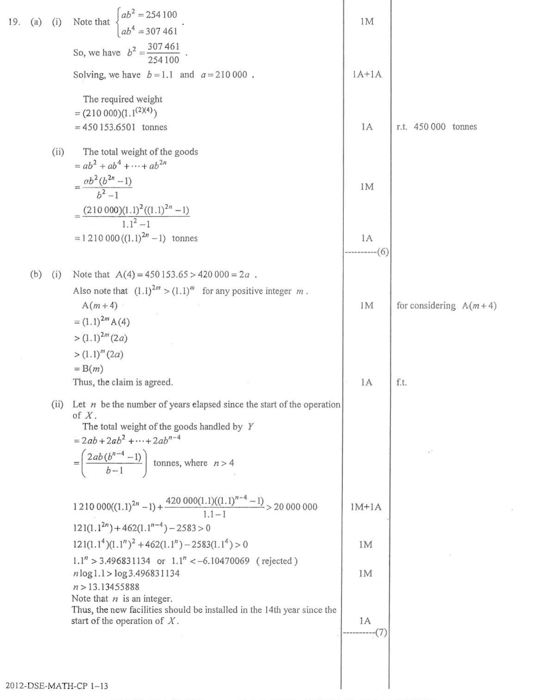

2012 DSE 數學 P1 Q19 答案＋詳解
題目（中文卷）
在某城市，一機場的空運貨站 ( X ) 自它開始運作起計的第 ( n ) 年所處理的貨物的重量為 ( A(n) ) 公噸，其中 ( n ) 為一正整數。已知 ( A(n) = ab^{2n} )，其中 ( a ) 及 ( b ) 均為正常數。現知 ( X ) 自它開始運作起計的第 1 年及第 2 年所處理的貨物的重量分別為 254100 公噸及 307461 公噸。
(a) (i) 求 ( a ) 及 ( b ) 。
由此求 ( X ) 自它開始運作起計的第 4 年所處理的貨物的重量。
(ii) 以 ( n ) 表 ( X ) 自它開始運作起計的首 ( n ) 年所處理的貨物的總重量。
(b) 自 ( X ) 運作了 4 年，空運貨站 ( Y ) 開始運作。設 ( B(m) ) 公噸為 ( Y ) 自它開始運作起計的第 ( m ) 年所處理的貨物的重量，其中 ( m ) 為一正整數。已知 ( B(m) = 2ab^m )。
(i) 該機場的經理宣稱於 ( Y ) 運作後，每一年 ( Y ) 所處理的貨物的重量均較 ( X ) 所處理的少。你是否同意？試解釋你的答案。
(ii) 該機場的監督認爲當 ( X ) 和 ( Y ) 所處理的貨物自 ( X ) 開始運作起計的總重量超出 20000000 公噸時，應安裝新設施以維持空運貨站的工作效能。根據該監督的想法，自 ( X ) 開始運作起計的哪一年應安裝新設施？ | | | | | | | | | | | | | | | | | | | | | | | | | | | | | | | | | | | | | | | | | | | | | | | | | | | | | | | | | | | | | |
試卷完 —
English version（英文卷題目）
In a city, the air cargo terminal ( X ) of an airport handles goods of weight ( A(n) ) tonnes in the ( n )th year since the start of its operation, where ( n ) is a positive integer. It is given that ( A(n) = ab^{2n} ), where ( a ) and ( b ) are positive constants. It is found that the weights of the goods handled by ( X ) in the 1st year and the 2nd year since the start of its operation are 254100 tonnes and 307461 tonnes respectively.
(a) (i) Find ( a ) and ( b ).
Hence find the weight of the goods handled by ( X ) in the 4th year since the start of its operation.
(ii) Express, in terms of ( n ), the total weight of the goods handled by ( X ) in the first ( n ) years since the start of its operation.
(b) The air cargo terminal ( Y ) starts to operate since ( X ) has been operated for 4 years. Let ( B(m) ) tonnes be the weight of the goods handled by ( Y ) in the ( m )th year since the start of its operation, where ( m ) is a positive integer. It is given that ( B(m) = 2ab^m ).
(i) The manager of the airport claims that after ( Y ) has been operated, the weight of the goods handled by ( Y ) is less than that handled by ( X ) in each year. Do you agree? Explain your answer.
(ii) The supervisor of the airport thinks that when the total weight of the goods handled by ( X ) and ( Y ) since the start of the operation of ( X ) exceeds 20000000 tonnes, new facilities should be installed to maintain the efficiency of the air cargo terminals. According to the supervisor, in which year since the start of the operation of ( X ) should the new facilities be installed?
END OF PAPER
Answers written in the margins will not be marked.
2012-DSE-MATH-CP 1-24
Page total
試卷完 —
官方評卷參考（Marking Scheme）

考評報告
（a）良好。很多考生能得出 X 自它開始運作起計的第 4 年所處理的貨物的正確重量。甚差。大部分考生混淆了「X 自它開始運作起計的首 n 年所處理的貨物的總重量」與「X 自它開始運作起計的第 n 年所處理的貨物的重量」。 [(b) (i)(ii)] 甚差。大部分考生只比較 A(5) 與 B(1) 的值便作結論。甚差。大部分考生未能解不等式。
相關課題
技能分析（呢題考咩、陷阱喺邊）
- 主課題
- 數列
- 相關課題
- 數列、指數與對數